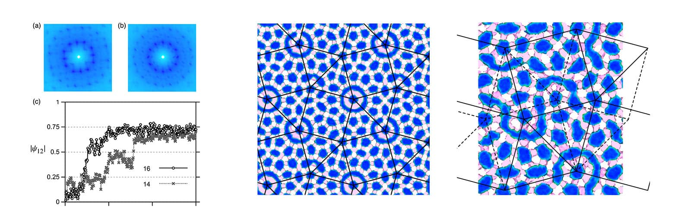

Dodecagonal quasicrystal in a polymeric alloy
T. Dotera and T. Gemma
Pilosophical Magazine 86, pp.1085-1091 (2006)
(ICQ9: Ninth International Conference on Quasicrystals, 2005 May)
We report the formation of an approximant of a dodecagonal quasicrystal in a quasi-two-dimensional lattice Monte Carlo simulation of a star-shaped three component polymeric alloy. It is associated with the recent striking experimental manifestation of the complex Archimedean tiling (32.4.3.4) consisting of triangles and squares, related to the $\sigma$ phase in the Frank-Kasper family, but whose edge length is about 80 nm. The simulation box with periodic boundary conditions (128*128*10) can be regarded as the Stampfli inflation of the (32.4.3.4) tiling, an approximant of the dodecagonal quasicrystal. The corresponding edge length of deflated squares and triangles is thought to be about 300 nm. Furthermore, the phason dynamics of the deflated square-triangle tiling is observed at an elevated temperature.
quasicrystals; polymers; alloys; self-assembly; approximants; Monte-Carlo simulation